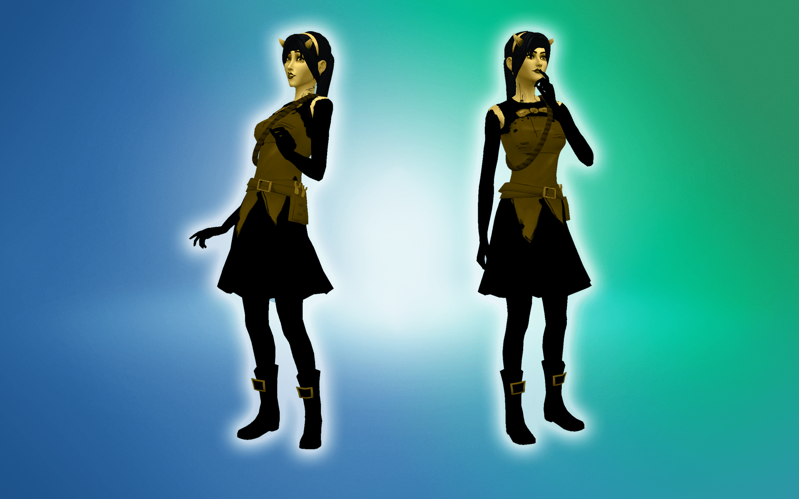

BATIM Allison Angel
“Apparently, I didn't get the memo, Alice Angel will now be voiced by Miss Allison Pendle.”
This bundle contains 3 items:
- One dress found full body section
- One pair of boots with black leggings found in shoes
- One hairstyle with horns and a headband found in hair
The skin detail, eyes, and makeup are all part of the clothing, and the clothing works best on the first preset body as the rope can distort when the body in shaped.